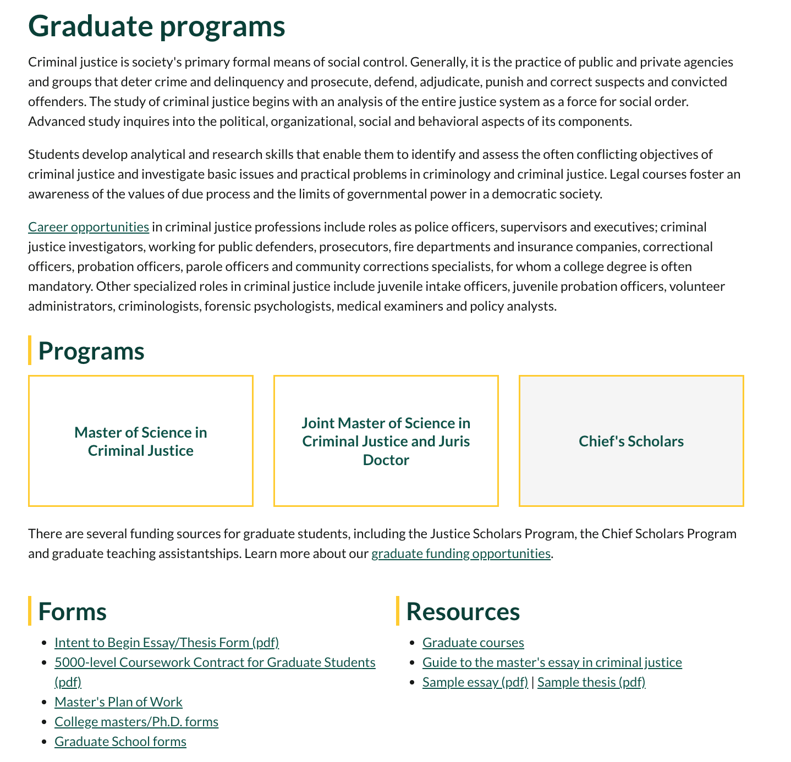
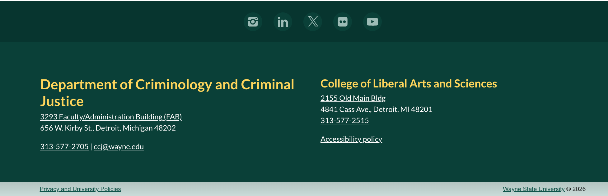
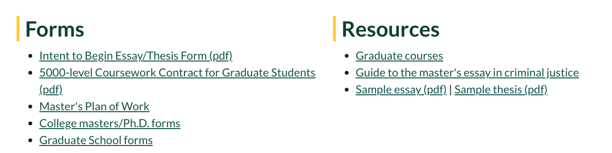
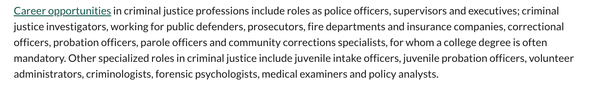
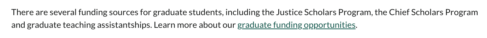
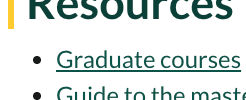
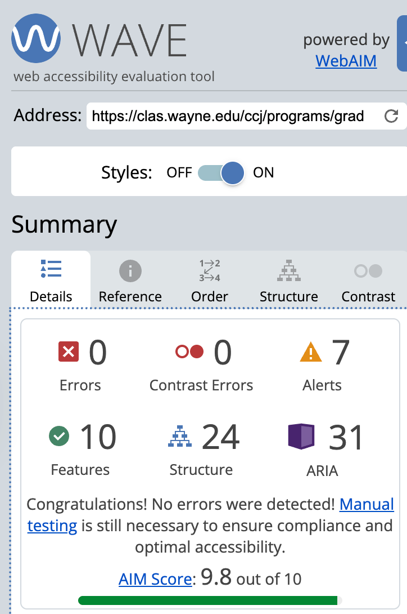
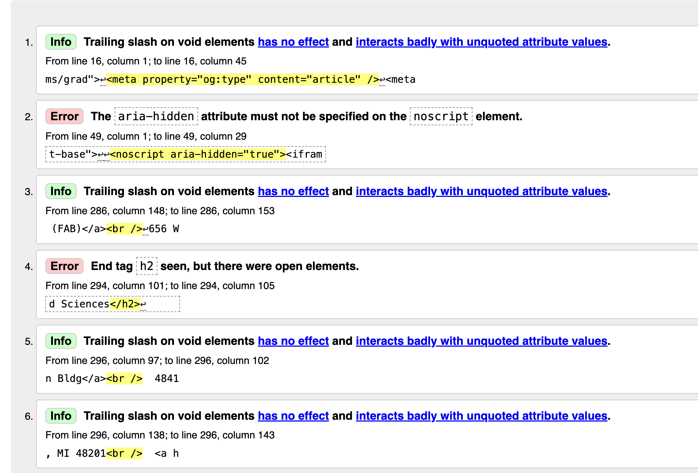

Step 1 - Page Selection
The page selected for this assignment is the Criminology and Criminal
Justice Graduate Programs webpage.
I selected this page because of my interest in gaining insight into a field closely related to my full-time job as a civilian employee working within law enforcement.
As someone who works at a police station, I recognize that there is only so much
knowledge that can be acquired through on-the-job experience.
In many cases,
practices can become diluted over time as informal interpretations of policies and
procedures are passed from one employee to another.
A formal education in criminal justice can provide a more structured understanding
of the field and enhance one's ability to contribute effectively to law enforcement,
advocacy, and other areas within the criminal justice system.
According to the assignment criteria, the webpage contains all required structural
elements, including a header, footer, navigation area, main content area, lists,
and multiple heading levels.
Step 2 - Section-by-Section Layout Analysis
Site Header
The site header is similar to all WSU webpages, containing the name of the university, a log in directory,
search bar, navigation links, and the Criminology and Criminal Justice program in a larger header than its
parenting school, the College of Liberal Arts and Sciences.
I would mark this section using the <header> element due to its explanatory
composition, containing main navigation tabs, searching capabilities as well as titling.
Main Navigation
The navigation menu for this page is nestled on the left of the page that can direct you to the pages for pursuing the program
in an Undergraduate capacity and Graduate capacity, along with a Career outlook tab that provides insight to the outlook of one's
career in the criminal justice field.
The element that I would use to mark this section of the page would probably be the <nav> element.
I think this element is the right choice for this section due to its direct relation to the main content of the page,
and its purpose. Seen in the photograph above, Graduate is bolded, indicating the selected page that I am doing for
this assignment. The Graduate page for Criminology and Criminal Justice has three different programs that can be
navigated to, and these programs are also presented and listed in the body of the page as well.
Primary Content
The primary content of the page begins with the heading "Graduate Programs" and concludes with the section containing links to
forms and resources. Because this content provides the main information about the program, including its focus as a graduate-
level degree and available tuition funding opportunities, I would identify this section using the <main>
element. The <main> tag is appropriate because it contains the primary content of the webpage and
represents the information that is most relevant to users visiting the page.

Page Footer

The footer contains contact information, faculty directories,
social media links, university policies, and copyright information.
This section would be marked using the
<footer> element because because it contains supplementary
information about the organization, including contact details, links to privacy
and university policies, and copyright information. These are all common
characteristics of content typically found within a webpage footer.
Step 3 - Heading Hierarchy
The visible headings on the main content of the page, from top to bottom, are
"Graduate Programs," "Programs," "Forms," "Resources," "Master of Science in Criminal Justice,"
"Joint Master of Science in Criminal Justice and Juris Doctor," and "Chief Scholar's Program."
I would assign the <h1> heading level to "Graduate Programs" because
it is the first, largest, and most prominent heading on the page. It clearly identifies the
overall topic and purpose of the content.
The headings "Programs," "Forms," and "Resources" would be assigned as <h2> elements.
These headings represent major subsections of the page and organize the content into distinct
categories, making them subordinate to the primary page heading.
I would assign <h3> elements to "Master of Science in Criminal Justice,"
"Joint Master of Science in Criminal Justice and Juris Doctor," and "Chief Scholar's Program."
These headings identify specific graduate programs within the broader "Programs" section and serve
as navigational links to additional pages. As such, they logically fall under the <h2> heading hierarchy.
However, based on the visual layout of these headings, which appear in a three-column format, I initially
suspected that the developers may not have implemented them as H3 elements. After inspecting the page source,
I confirmed that no H3 elements are present within the main content section of the page. While the visual structure
suggests a hierarchical relationship that would support the use of H3 headings, the developers appear to have achieved
this layout through other HTML elements and CSS styling.
Furthermore, the only example of an H3 element I was able to identify appears in the page footer.
The heading "College of Liberal Arts and Sciences" is marked as an H3 and is displayed at a slightly
smaller size than the H2 heading "Department of Criminology and Criminal Justice." Both headings are
styled in the same gold color, but their differing sizes reflect the hierarchy established by the heading levels.

Step 4 - Lists

The "Forms" and "Resources" sections near the end of the page are the most obvious examples of lists
because their content is displayed with bullet points. However, the navigation menu in the page header
and the program navigation menu within the main content area also function as lists. All of these examples
would be considered unordered lists <ul> because the items do not need to be presented in a specific sequence.
When examining the "Forms" and "Resources" sections, my initial thought was that they could be marked up as <dl>,
or description lists since they contain different types of forms and resources. However, these sections function more as directories
of links than as terms paired with descriptions. Because each item links to either a PDF document or another page within the website,
using unordered lists <ul> would be more appropriate.
The header navigation menu, which includes links such as "Admissions," "Programs," "For Students," "Research," "People," "About," and "News,"
would also be marked up as an unordered list. Although the items are displayed horizontally and do not have visible bullet points, this
appearance is likely the result of CSS styling rather than a different HTML structure.
Similarly, the navigation menu within the main content area would be an unordered list. Since the page being viewed focuses
on graduate programs, the links for "Master of Science," "Master of Science and J.D.," and "Chief Scholar's Program" appear
as items nested within the broader "Graduate" category. This category exists alongside other navigation items such as "Undergraduate"
and "Career Outlook," making a nested unordered list structure the most logical markup choice.
Step 5 - Link Analysis
Internal Links
- Career Opportunities
- Graduate Funding Opportunities
- Graduate Courses
Three examples of internal links that remain within the Wayne State University domain can be found within the body of the page,
or what would likely be contained within the element. These links are visibly underlined and hyperlinked as
"Career Opportunities," "Graduate Funding Opportunities," and "Graduate Courses."
Selecting either "Career Opportunities" or "Graduate Funding Opportunities" directs the user to related content within the
Wayne State University website.


The "Graduate Courses" link opens in a new browser tab, but it still remains within the
wayne.edu domain. This behavior may be due to the page's relationship to a broader academic catalog rather than the specific
program page itself. Upon visiting the link, it becomes apparent that the page is part of the College of Liberal Arts and
Sciences Graduate Bulletin, which contains a larger collection of graduate course information and academic resources.

External Links
Three examples of external links can be found in the page footer. The social media links for
Instagram, LinkedIn, and Flickr redirect users to websites outside of the Wayne State University domain and open in new browser tabs.
Step 7 - Accessibility Analysis

Entering the webpage's URL into the Web Accessibility Evaluation (WAVE) Tool returned an output score of 9.8 out of 10
with no errors, but 7 alerts, 5 of which inform me of PDF files placed on the page, and the other two that show <noscript> elements
which are placed after the header and footer of the page.
Step 8 - HTML Validation

Entering the same link into the HTML Validator returned an evaluation
with two errors and four informational alerts. While I am unfamiliar with the first error regarding the <aria-hidden> attribute,
I did notice the second error with the end tag of to attempt to close the H3 heading "College of Liberal Sciences" in the footer.
The developer of the page could go back and enter the correct closing tag of <h3> instead of </h2>.
Step 9 - HTML Summary
Overall, I found the Master of Science in Criminal Justice webpage to be well-structured and easy to navigate.
The page makes effective use of major semantic sections, including a header, navigation menus, main content area, and footer,
which helps users locate information efficiently. The most significant structural issue I identified was the inconsistent heading
hierarchy, particularly the absence of H3 headings within the main content despite the visual presentation suggesting a clear
hierarchy of graduate program options. This issue could create some confusion for screen reader users who rely on heading
structures to navigate content. Additionally, the HTML validation error involving the incorrect closing tag for the footer
heading should be corrected. If I could recommend one improvement, it would be implementing a more accurate and consistent
heading structure throughout the page, as this would improve both accessibility and semantic organization while better
reflecting the visual layout of the content.